同一个灵感（侦探在板子上钉资料、红线连关系、中间是最终目标），同一份真实数据（地图 #604）， 同一套四状态语义，并且**都带着真机现有的全部功能**（执行 / 新会话 / 诊断 / 正文详情 / Decisions so far / Not yet specified / Out of scope）。 五个方案的区别在：板子是什么做的、光怎么打、手怎么动。
这一轮跟上一轮最大的不同：原型必须是一个能用的地图详情页，不只是好看。
我把真机上那八条功能（抄自 src/client/views/MapDetail.js 与语言表）写成硬验收项，
每一条都要在页面上一屏之内找得到、点得到，并且带 data-cap 标记供机器核对。
三条不许破的红线：① 不许把「层」当骨架（不按层分行／分列／分抽屉／分章节，不把层当坐标轴）； ② 四状态语义不改；③ 诚实（未知不伪装成待办，也不伪装成不存在）。 这一轮放开的一条：维护者明说「中间是最终的目标」，所以中心辐射式布局是被要的——那不是台阶，是辐射。
一整块金属板：目的地那张最大最亮、四角磁扣吸在板上沿正中，其他资料钉在它四面八方，红线从每一张朝它汇。
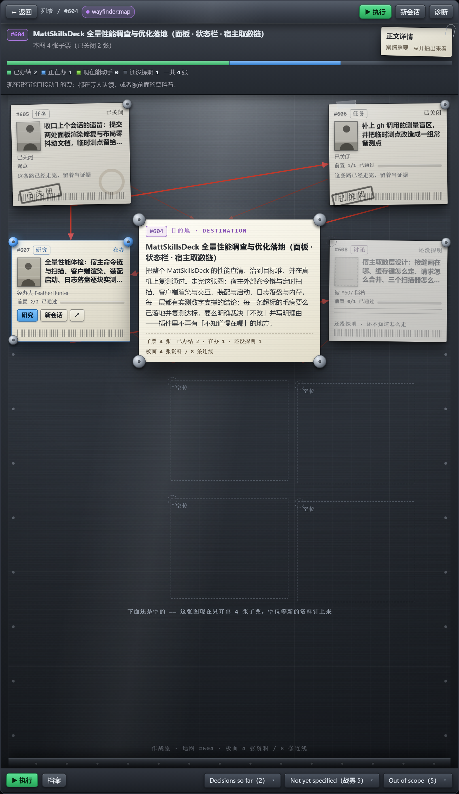
810 宽。每张资料上有人像、有条形码；已关闭的盖黑章，正在办压着一枚蓝色在办磁扣；下面留着四块「空位」，写着「这张图现在只开出了 4 张票，空位等新的资料钉上来」。
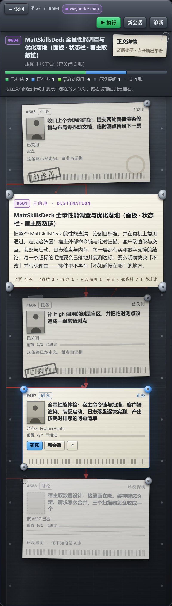
拖到最窄（400）
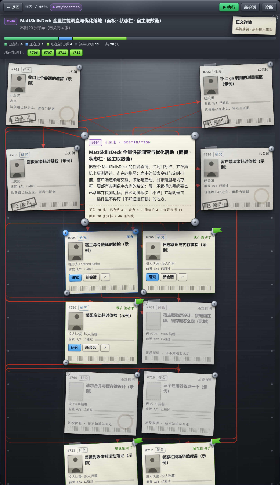
20 张票（810）
软木板 + 彩色图钉，一盏台灯，板子以外的房间是暗的。台灯的光圈跟着鼠标走，光没照到的地方沉在暗里——而目的地那张永远最亮，跟灯在哪无关。
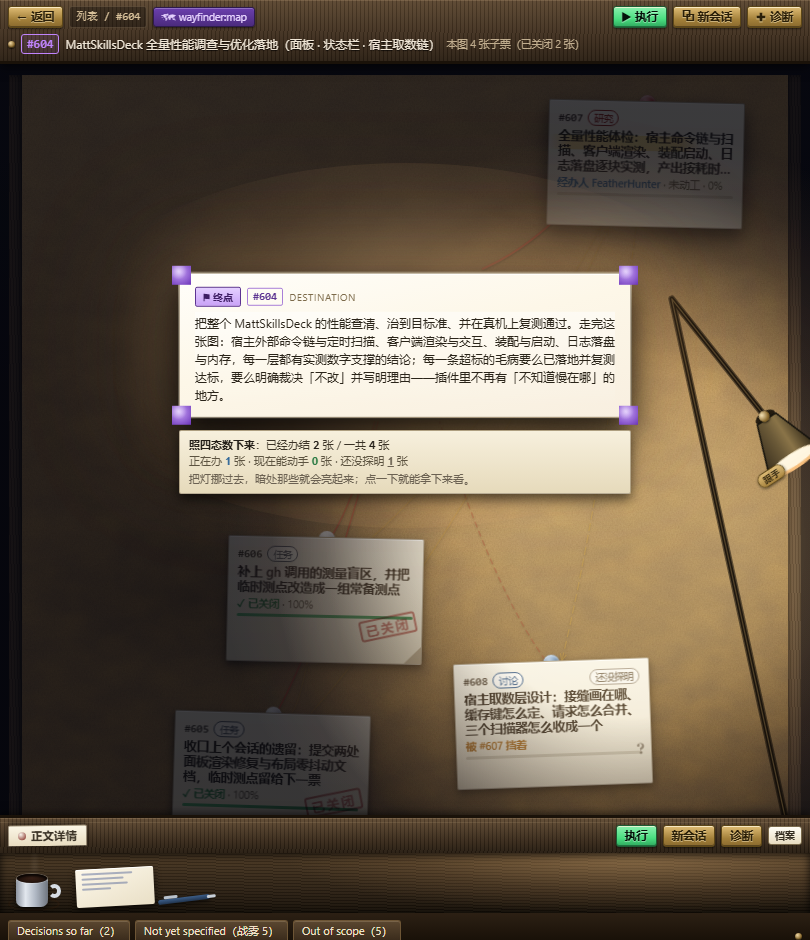
810 宽。中心是目的地（紫色图钉四角），四周是资料卡；#608 在暗处，写着「被 #607 挡着 · ？」；桌上摆着咖啡杯、便签和笔。
pointer-events:none，洞跟着灯走）。实测一张离灯 461px 的雾票，点它之前那块像素亮度 53，命中它的元素栈里没有暗层；点完它被拿下来（z-index 20→48），同一块像素亮度升到 215——暗处的东西不但点得到，点完还看得见。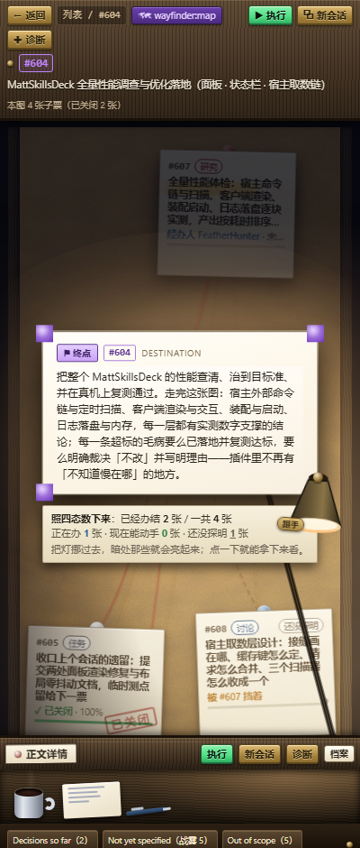
拖到最窄（400）
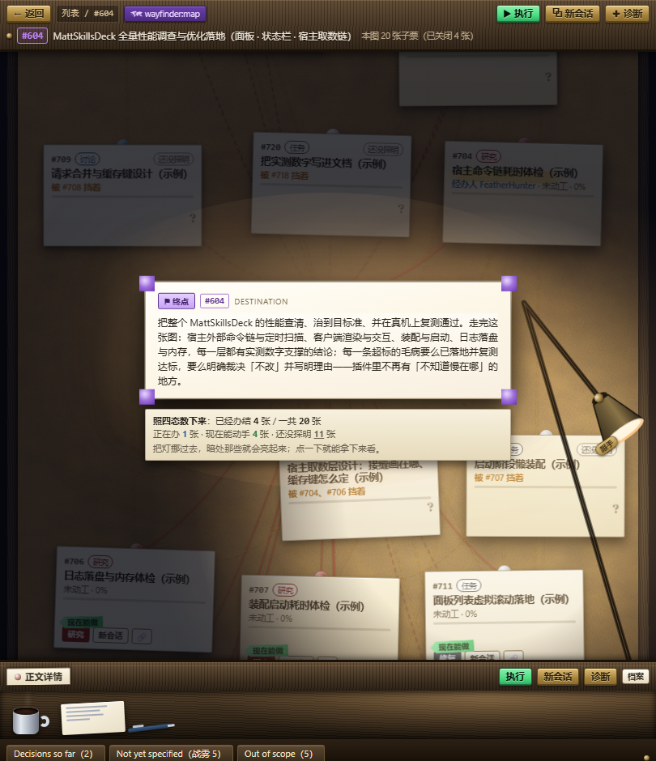
20 张票（810）
资料吸在半透明玻璃上，玻璃后面有房间的光；马克笔直接画在玻璃上——目的地被一个红圈圈住，旁边写着「目标」。
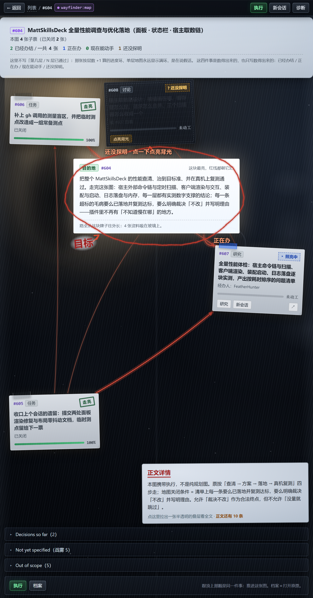
810 宽。红线在玻璃上朝目标汇；写「走亮」的已办结、写「照亮中」的在办；#608 是一块暗斑，旁边标着「点一下点亮背光」。
<path> attribute d: Expected number），它已经修掉，现在全绿。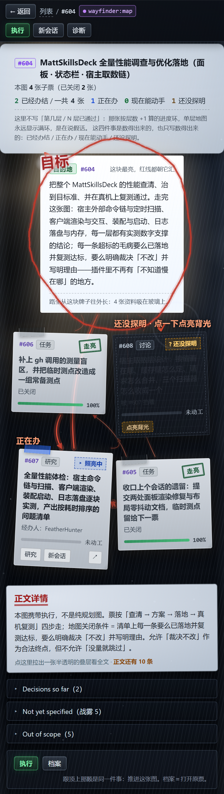
拖到最窄（400）
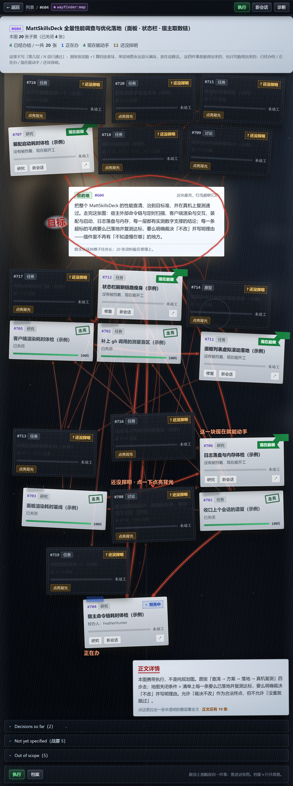
20 张票（810）
不是一块板，是一整面墙：正中一块打着光的目标板，左右挂着四块按状态分的分区板，红线在板与板之间穿。
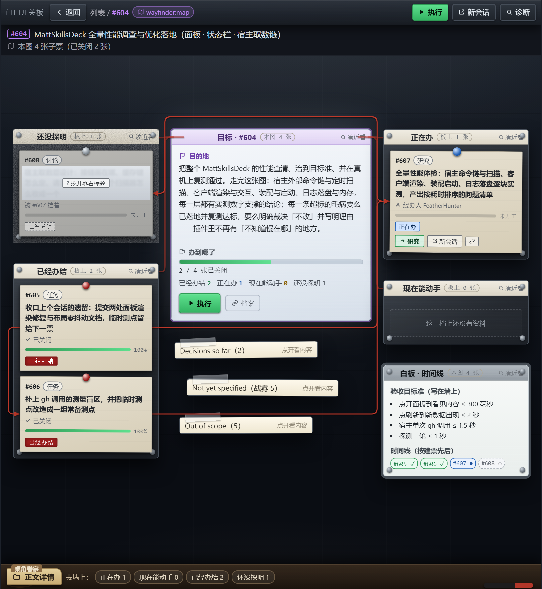
810 宽。目标板上有目的地全文与「2 / 4 张已关闭」；左侧「还没探明」与「已经办结」，右侧「正在办」与「现在能动手」；墙上还钉着三块标签卡和一块写着验收目标准与时间线的白板。
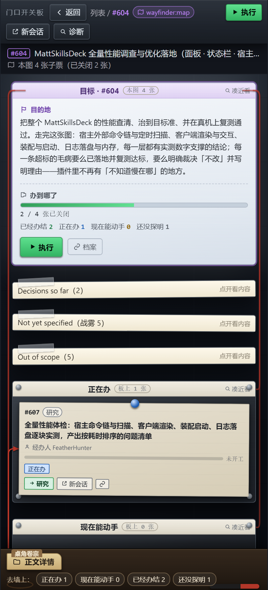
拖到最窄（400）
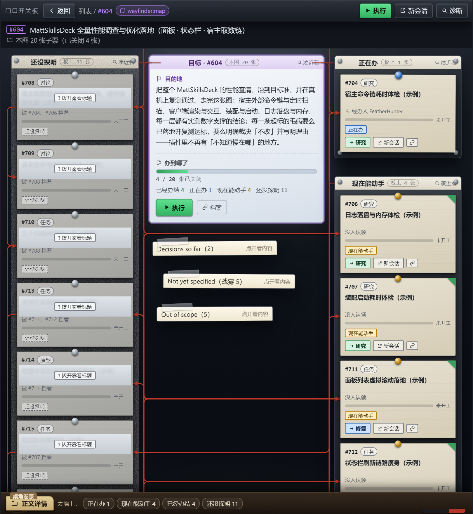
20 张票（810）
以镜头为核心：进页面先是一张资料的特写，然后拉远露出整块板；滚轮像推轨，拖动像摇镜，点一条红线，镜头就沿着这条线走到另一头那张资料上。
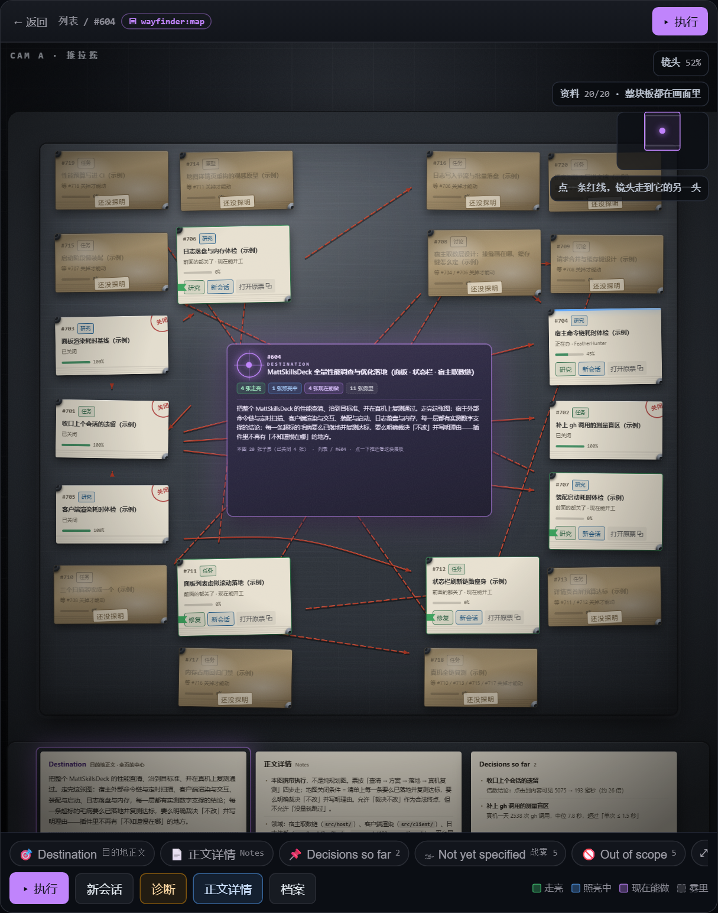
20 张票（810）。左上角是镜头 HUD（推拉摇、镜头 50%、「资料 20/20 · 整块板都在画面里」）；底部是常驻字幕条，写着目的地正文、正文详情、以及三个折叠区。
routeBend is not defined（整块板画不出来），它已经修掉，现在全绿。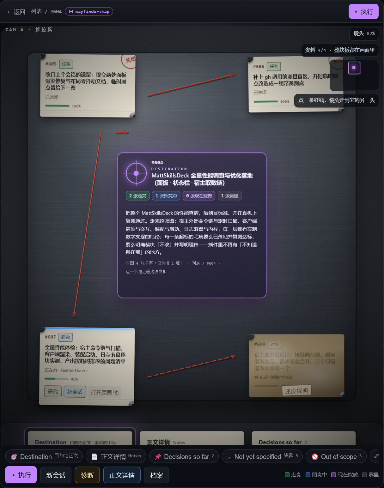
4 张票（810）
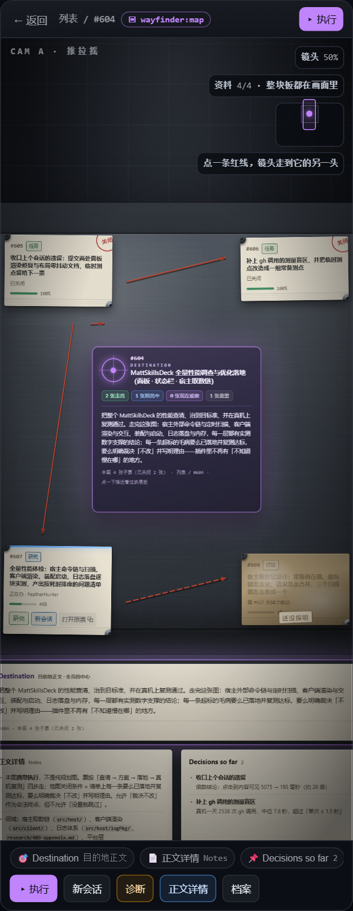
拖到最窄（400）
| 查什么 | 怎么查 | 结果 |
|---|---|---|
| 真机八条功能一条不少 | 逐条找 data-cap 节点，并且要求它「看得见、点得到」 | 五份全部 8/8（返回 / 执行 / 新会话 / 诊断 / 正文详情 / Decisions so far / Not yet specified / Out of scope） |
| 票上的原词没被改 | 页面文字里逐条搜原词 | 五份全部保持原词 |
| 零外链、零联网、零轮询 | 扫源码里真正的网络地址、<script src>、@import、fetch、setInterval | 五份全部通过 |
| 三份样本 × 两种宽度 | 每份等满 2.5 秒再收 pageerror 与 console.error（入场镜头／打字机这类链路是延后启动的，等 500 毫秒抓不到） | 零报错（M3 的 NaN 路径、M5 的 routeBend 崩溃都是这样抓出来的，两家都已修掉） |
| 不许横向滚动 | documentElement 与 body 的 scrollWidth | 五份在 400 与 810 下都不滚 |
| 四状态分类正确 | 断言 data-ticket / data-state 分布：推进中 2/1/0/1，大图 4/1/4/11 | 五份全部对上 |
| 目的地永远清晰 | 查 data-role="destination" 是否在视野里 | 五份全部通过 |
| 不许用层当骨架 | 扫源码与页面文字里的「第 N 层 / Level N」 | 五份全部为零 |
| 票点得到（不被别的东西盖住） | 把每张票的中心点交给浏览器自己做命中测试（elementFromPoint），命中的必须是它自己／后代／祖先 | M1、M4 各有一条「底部常驻条压在票上」，两家都改好了；M2 还有三条在改（两条被顶部常驻行盖住、一条被一个没类名的装饰层盖住）；M3、M5 干净 |
M4 第一版：810 宽下初始取景把右半边切掉，「正在办」那块板（最要紧的那张票）在面板外 —— 已改成「整面墙装进面板」。
M3 第一版：SVG 路径算出 NaN，控制台报错（三份样本都有）。
M5 第一版：默认样本下抛 routeBend is not defined，整块板画不出来。
M1 / M4：底部那条常驻条压在票上，被压的那张点不到（M1 是 400 宽下的 #606，M4 是大样本 810 下的 #715）。
每一条都有截图或断言输出，不是猜的。
五个都是单文件、零外链，双击就能开。每页底部有原型控制条：切宽度（400 / 810）、切状态（推进中 / 还没画图 / 大图）。也可以用网址参数：?w=810&s=big&bar=0。
绝对路径：
D:\dsh-plugin\dsh-mattpocock-skills-deck\docs\prototype\474-M1-metal-war-room.html
D:\dsh-plugin\dsh-mattpocock-skills-deck\docs\prototype\474-M2-cork-late-night.html
D:\dsh-plugin\dsh-mattpocock-skills-deck\docs\prototype\474-M3-glass-backlit.html
D:\dsh-plugin\dsh-mattpocock-skills-deck\docs\prototype\474-M4-case-wall.html
D:\dsh-plugin\dsh-mattpocock-skills-deck\docs\prototype\474-M5-camera-driven.html
这一轮的任务书：474-design-brief-movieboard.md（含电影板的完整规格、真机八条功能清单、技术菜单与禁用清单）。